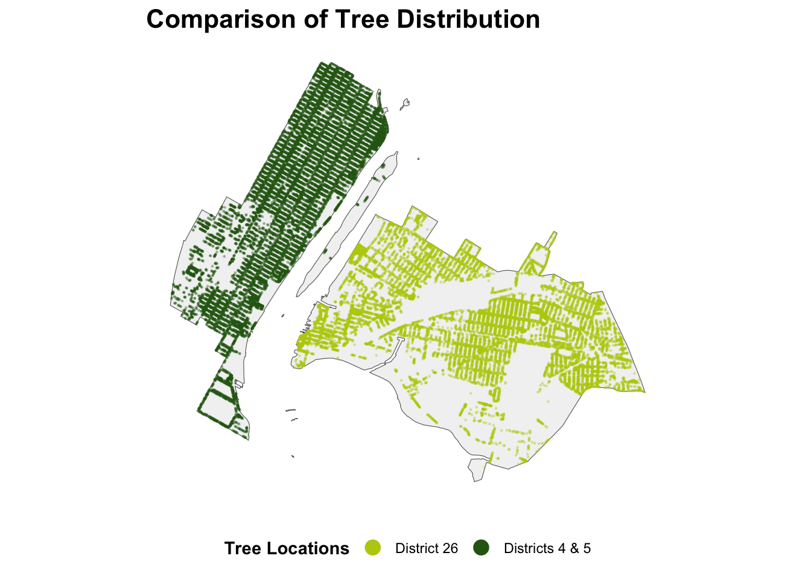

Mini-Project #03: Visualizing and Maintaining the Green Canopy of NYC
Author
Wing Chan
Data Acquisition
NYC City Council Districts
Task 1: Download NYC Citcy Council District Boundaries
Code
# Create data/mp03 under working folder if it doesnt exsit if(!dir.exists(file.path("data", "mp03"))){dir.create(file.path("data", "mp03"), showWarnings=FALSE, recursive=TRUE)}#download zip file -- City Council (Clipped to Shoreline) Most Recent Release#https://s-media.nyc.gov/agencies/dcp/assets/files/zip/data-tools/bytes/city-council/nycc_25c.zip#current_url <-"https://s-media.nyc.gov/agencies/dcp/assets/files/zip/data-tools/bytes/city-council/nycc_25c.zip"destfile <-"data/mp03/nycd_23c.zip"if (!file.exists(destfile)) {download.file(current_url, destfile = destfile, mode ="wb")message("File downloaded successfully to: ", destfile)} else {message("File already exists at: ", destfile)}#unzip the downloaded fileunzip(zipfile = destfile, exdir="data/mp03")#Read the shp file in the unzipped directory using sf::st_read.library(sf)shp_file ="data/mp03/nycc_25c/nycc.shp"nyc_councildistricts <-st_read(shp_file)
Reading layer `nycc' from data source
`/Users/wingchan/STA9750-2025-FALL/data/mp03/nycc_25c/nycc.shp'
using driver `ESRI Shapefile'
Simple feature collection with 51 features and 3 fields
Geometry type: MULTIPOLYGON
Dimension: XY
Bounding box: xmin: 913175.1 ymin: 120128.4 xmax: 1067383 ymax: 272844.3
Projected CRS: NAD83 / New York Long Island (ftUS)
Code
#Transform the resultnyc_councildistricts <-st_transform(nyc_councildistricts, crs="WGS84")#nyc_councildistricts
NYC Tree Points Task 2: Download Tree Points
Code
library(httr2)# --- Setup ---dir.create("data/mp03/batches", recursive =TRUE, showWarnings =FALSE)combined_file <-"data/mp03/treepoints_all.gpkg"# --- Check if combined file already exists ---if (file.exists(combined_file)) {cat("Download Data by batches: Combined dataset already exists at", combined_file, "\n")} else { ENDPOINT <-"https://data.cityofnewyork.us/resource/hn5i-inap.geojson" BATCH_SIZE <-30000# --- Detect last completed batch --- existing_batches <-list.files("data/mp03/batches", pattern ="tree_batch_\\d+\\.geojson$", full.names =TRUE)if (length(existing_batches) >0) { last_batch <-max(as.integer(gsub("\\D", "", basename(existing_batches)))) OFFSET <- last_batch * BATCH_SIZE BATCH <- last_batch +1cat("Download Data by batches: Resuming download from batch", BATCH, "offset", OFFSET, "\n") } else { OFFSET <-0 BATCH <-1cat("Download Data by batches: Starting fresh download\n") } END_OF_EXPORT <-FALSE# --- Download loop ---while (!END_OF_EXPORT) {cat("\n Downloading batch", BATCH, "offset", OFFSET, "\n")# Ensure OFFSET is plain integer to avoid scientific notation offset_plain <-as.integer(OFFSET) url <-paste0(ENDPOINT, "?$limit=", BATCH_SIZE, "&$offset=", offset_plain)cat("API Request URL:", url, "\n")# Retry logic (up to 3 attempts) success <-FALSE tries <-0while (!success && tries <3) { tries <- tries +1cat("Attempt", tries, "for batch", BATCH, "\n") resp <-tryCatch({request(url) |>req_perform() }, error =function(e) {message("Attempt ", tries, " failed: ", e$message)Sys.sleep(3)return(NULL) })if (!is.null(resp)) success <-TRUE }if (!success) {message("Download Data by batches: Failed after 3 attempts, stopping at batch ", BATCH)break }# Save batch locally batch_file <-sprintf("data/mp03/batches/tree_batch_%03d.geojson", BATCH)# Skip if file already existsif (file.exists(batch_file)) {cat("Download Data by batches: Batch file already exists, skipping:", batch_file, "\n") } else {writeBin(resp_body_raw(resp), batch_file)cat("Download Data by batches: Saved batch to", batch_file, "\n") }# Stop if small file (probably end of dataset)if (file.size(batch_file) <10000) {message("nd of export reached (small file size).")unlink(batch_file) END_OF_EXPORT <-TRUEbreak } OFFSET <- OFFSET + BATCH_SIZE BATCH <- BATCH +1Sys.sleep(2) # polite pause to avoid rate limit }cat("\n Download Data by batches: Download complete. Files saved in data/mp03/batches\n")}
Download Data by batches: Combined dataset already exists at data/mp03/treepoints_all.gpkg
Code
library(sf)library(dplyr)combined_file <-"data/mp03/treepoints_all.gpkg"# --- Check if combined file already exists ---if (file.exists(combined_file)) {cat("Reading Process: Combined dataset already exists at", combined_file, "\n") treepoints_sf <-st_read(combined_file, quiet =TRUE)} else {# List all batch files batch_files <-list.files("data/mp03/batches", pattern ="\\.geojson$", full.names =TRUE)cat("Found", length(batch_files), "files to read.\n")# Read each file into sf object all_batches <-lapply(batch_files, function(f) {cat("Reading", f, "\n")tryCatch(st_read(f, quiet =TRUE), error =function(e) NULL) })# Combine all batches treepoints_sf <-bind_rows(all_batches)# Save combined filest_write(treepoints_sf, combined_file, delete_dsn =TRUE)cat("Reading Process: Combined dataset with", nrow(treepoints_sf), "records saved to", combined_file, "\n")}
Reading Process: Combined dataset already exists at data/mp03/treepoints_all.gpkg
Data Integration and Initial Exploration
Task 3: Plot All Tree Points
Code
library(ggplot2)library(sf)# Base map with NYC council districts (polygon layer)ggplot() +# Council district boundariesgeom_sf(data = nyc_councildistricts,fill ="grey95",color ="grey40",size =0.4 ) +# Trees (point layer)geom_sf(data = treepoints_sf, # or treepoints_sfcolor ="#80B40A", # greenalpha =0.1, # transparency to reduce overplottingsize =0.1# small points for legibility ) +# Titles and labelslabs(title ="NYC Street Trees by Council District" ) +# Stylingtheme_minimal() +theme(panel.grid.major =element_blank(),axis.text =element_blank(),axis.ticks =element_blank(),axis.title =element_blank(),plot.title =element_text(size =16, face ="bold"),plot.subtitle =element_text(size =12) )
Task 4: District-Level Analysis of Tree Coverage
Code
#work with small dataset#get tree sampletreepoints_sample <- treepoints_sf |>slice_sample(n =100000)#check sample data#head(treepoints_sample)#summary(treepoints_sample)#transformtreepoints_sample <-st_transform(treepoints_sample, st_crs(nyc_councildistricts))#spatial joindistricts_trees_contain_s <-st_join(nyc_councildistricts, treepoints_sample, join = st_contains)#check sample #summary(districts_trees_contain_s)#--- Full set of data ---#treepoints_sf <-st_transform(treepoints_sf, st_crs(nyc_councildistricts))#summary(treepoints_sf)#spatial joindistricts_trees <-st_join(nyc_councildistricts, treepoints_sf, join = st_contains)#check sample #summary(districts_trees)## --- Q1--- ##district_tree_counts <- districts_trees |>st_drop_geometry() |># Drop geometry for easy countinggroup_by(CounDist) |># adjust column name as neededsummarise(tree_count =n())Most_tree_district <- district_tree_counts |>slice_max(order_by=tree_count , n=1)
Which council district has the most trees?
District 51 has the most trees. There are 70927 trees in the district.
Which council district has the highest density of trees? The Shape_Area column from the district shape file will be helpful here.
District 7 has highest density of trees of 0.0281538%.
Code
#Q3Top_dead_tree_district <-districts_trees |>st_drop_geometry() |># Drop geometry for easy countinggroup_by(CounDist) |>summarise(total_trees =n(), # (1) Total trees per districttotal_dead_trees =sum(tpcondition =="Dead", na.rm =TRUE), # (2) Dead treespercent_dead_trees = (total_dead_trees / total_trees) *100# (3) Percentage )|>ungroup() |>slice_max(order_by=percent_dead_trees, n=1)
Which district has highest fraction of dead trees out of all trees?
District 32 has highest fraction of dead trees of 14.2229272% .
Code
#Q4tree_species_manhattan <- districts_trees |># Add borough column based on CounDistmutate(borough =case_when( CounDist >=1& CounDist <=10~"Manhattan", CounDist >=11& CounDist <=18~"Bronx", CounDist >=19& CounDist <=32~"Queens", CounDist >=33& CounDist <=48~"Brooklyn", CounDist >=49& CounDist <=51~"Staten Island",TRUE~NA_character_# handle unexpected values ) ) |>#Filter for Manhattan onlyfilter(borough =="Manhattan")|># Drop geometry for easy countingst_drop_geometry() |>#Count number of trees by speciesgroup_by(genusspecies) |>summarise(tree_count =n(), .groups ="drop")Top_tree_species_manhattan <- tree_species_manhattan |>slice_max(order_by = tree_count, n=1)
What is the most common tree species in Manhattan?
The most common tree species in Manhattan is Gleditsia triacanthos var. inermis - Thornless honeylocust. There are 17311 Gleditsia triacanthos var. inermis - Thornless honeylocust in Manhattan.
What is the species of the tree closest to Baruch’s campus?
The species of the tree closest to Baruch’s campus is Quercus acutissima - sawtooth oak .
Government Project Design
Task 5: NYC Parks Proposal
Code
#for Task 5: Exploratory analysis to find the lowest tree density districtslowest_tree_density <- tree_density |>slice_min(order_by= tree_density, n=10)#lowest_tree_density#1 31 507654144. 31318 0.00617 <- JFK airport#2 50 665196534. 52439 0.00788 <- park included#3 32 358667790. 30261 0.00844 <- park included #4 46 277719690. 24304 0.00875 <- park included#5 26 168180998. 15372 0.00914 <- area possible for improve**#summary(tree_density)## tree density among NYC ==> Mean :0.015468# tree need to plan for this district to meet avg green# 26014.24 (total) - 15372 (current) = 10642 more trees needed# formular = 168180998*0.015468/100tree_density |>filter( CounDist ==26)
#graph #compare the tree density vs waterfronts (east side of Manhattan) #get only graphing district (district26 & east side of Manhattan:district 4&5)district26 <-nyc_councildistricts |>#filter (CounDist ==26)filter(CounDist %in%c(26, 4, 5))#get only trees in district 26trees_districts26 <- districts_trees |>#filter(CounDist == 26) |>filter(CounDist %in%c(26)) |>select(objectid) |>st_drop_geometry() |>#drop the join geometryinner_join(treepoints_sf, by="objectid")#summary(trees_districts26)#get only trees in district 4 & 5 for comparison trees_districts_compare <- districts_trees |>#filter(CounDist == 26) |>filter(CounDist %in%c(4, 5)) |>select(objectid) |>st_drop_geometry() |>#drop the join geometryinner_join(treepoints_sf, by="objectid")#summary(trees_districts_compare)# Combine both tree data frames with a label for legendtrees_combined <-bind_rows( trees_districts26 |>mutate(group ="District 26"), trees_districts_compare |>mutate(group ="Districts 4 & 5"))
Greening District 26 – A Proposal for 10,642 New Trees
Prepared for NYC Parks & City Council November 2025
Background
This proposal outlines the District 26 Tree Equity Initiative, a critical project designed to enhance environmental quality and resident well-being in the neighborhoods of District 26. District 26 covers the westernmost neighborhoods of Queens along the East River, including Long Island City, Sunnyside, southern Astoria, and northern Woodside.The primary goal is to address the district’s severely underdeveloped tree canopy, focusing on areas identified as vulnerable: industrial zones, underutilized open spaces along rail corridors, and exposed waterfronts. The project involves the comprehensive planting of new street and park trees, and the establishment of a robust program to ensure the long-term success of the new green infrastructure. Investing in tree canopy is investing in public health, cooling critical heat islands, and improving air quality.
Why District 26
Code
ggplot(tree_density, aes(x =reorder(CounDist, tree_density), y = tree_density,fill =factor(CounDist))) +geom_col() +scale_fill_manual(name ="Council District",values =ifelse(tree_density$CounDist ==26, "#B8CD0E", # dark green highlight"#2A6417") # lighter green for others ) +geom_hline(yintercept =0.01547, linetype ="dashed", color ="red", size =0.5) +geom_text(aes(26, 0.016, label ="NYC Avg"), vjust =-0.5, color ="red") +labs(title ="Tree Density by District",x ="District", y ="Density (trees/sq ft)") +theme_minimal()+theme(plot.title =element_text(face ="bold", size =14),axis.text.x =element_text(angle =45, hjust =1),legend.position ="none", # optionalplot.margin =margin(20, 20, 20, 20) )

District 26’s tree density of 0.00914 is significantly below the NYC district average of 0.015468, highlighting a clear need for intervention. Although some districts have lower absolute tree counts, their larger land areas often obscure the urgency of improvement. In contrast, District 26’s smaller area makes its low density both an urgent and manageable deficit. The accompanying graphic underscores this disparity by visually contrasting District 26’s density with that of comparable districts and the citywide mean, demonstrating that District 26 not only has the available land area but also represents the most strategic opportunity for investment to advance environmental equity across New York City.
The Tree Equity Goal
Based on the goal of reaching the average tree density observed across the New York City districts, the scope of this project is set to address the current deficit. The target of 10,642 trees will raise District 26’s tree count from 15,372 to 26,014, lifting the district’s density to the current NYC district average of approximately 0.015468 trees per square foot of public space.
Targeted Planting Zones
Code
#Map library(ggplot2)library(sf)# Base map with NYC council districts (polygon layer)ggplot() +# Council district boundariesgeom_sf(data = district26,aes(geometry = geometry),fill ="grey95",color ="grey40",size =0.4 ) +# Tree points with mapped color (so ggplot knows to make a legend)geom_sf(data = trees_combined,aes(geometry = geom, color = group),alpha =0.3,size =0.2 ) +# Color legend setup (defined outside of geom)scale_color_manual(name ="Tree Locations",values =c("District 26"="#B8CD0E","Districts 4 & 5"="#2A6417" ),guide =guide_legend(override.aes =list(size =4, alpha =1) # Make legend dots bigger & opaque ) ) +# Titles and labelslabs(title ="Comparison of Tree Distribution" ) +# Stylingtheme_minimal() +theme(panel.grid.major =element_blank(),axis.text =element_blank(),axis.ticks =element_blank(),axis.title =element_blank(),plot.title =element_text(size =16, face ="bold"),plot.subtitle =element_text(size =12),legend.title =element_text(face ="bold"),legend.position ="bottom" )
The above visualization of District 26 provides highlights two critical areas for tree implementation:
The Waterfront Corridors: Areas along the East River (Eastside) show high potential for increased density, contrasting with the riverside of districts (District 4 or 5) across the river, that have already implemented robust waterfront greening.
Industrial Zones: The southern, former factory zones and areas adjacent to the rail lines present expansive, underutilized opportunities for tree installation to mitigate the heat island effect and buffer residential areas.
District 26 currently holds the dubious distinction of having one of the lowest tree densities among its peers, making it an ideal, high-impact candidate for this federal investment.
Code
# Make sure dataset has the geometrytrees_districts26_sf <- trees_districts26 |>filter(!is.na(tpcondition)) # remove missing values for cleaner plotting#get only district 26district26_sf <- district26 |>filter (CounDist ==26)library(ggplot2)library(sf)library(dplyr)# ️ Map visualizationggplot() +# Base map: District 26 boundarygeom_sf(data = district26_sf,aes(geometry = geometry),fill ="grey95",color ="grey40",size =0.4 ) +# Trees colored by tpconditiongeom_sf(data = trees_districts26_sf,aes(geometry = geom, color = tpcondition),alpha =0.6,size =0.8 ) +scale_color_manual(name ="Tree Condition",values =c("Good"="#74c476", # green"Fair"="#ffcc00", # yellow"Poor"="#e6550d", # orange/red"Dead"="black", # black for dead trees"Excellent"="#31a354"# optional, if exists ),na.value ="grey70"# for missing conditions ) +labs(title ="Tree Conditions in District 26" ) +theme_minimal() +theme(panel.grid.major =element_blank(),axis.text =element_blank(),axis.ticks =element_blank(),axis.title =element_blank(),plot.title =element_text(size =16, face ="bold"),legend.title =element_text(face ="bold"),legend.position ="bottom" )
Tree conditions in District 26 show a clear need for targeted health management. While many existing trees remain in Good or Fair condition, a noticeable cluster of Poor and Dead trees is concentrated in several interior corridors of the district. These deteriorating pockets signal areas where routine maintenance has lagged and where strategic replanting or intervention is needed.
Conclusion
This proposal addresses District 26’s urgent tree canopy deficit, which affects public health and quality of life. The Urban Canopy & Resilience Initiative targets the planting of 10,642 new trees in high-potential areas, providing a data-driven solution to improve environmental equity. We urge the committee to approve this investment for a greener, healthier, and more resilient District 26.